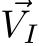
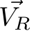
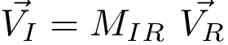
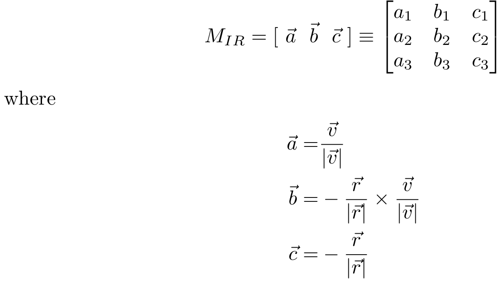

To analyze the transformation of sun-vector and magnetic field vector in different reference frames.

The motion of rigid body is specified using its position, velocity, acceleration etc. These vector quantities are specified in some frame of reference. Thus equations of motion are also written with respect to that frame. As you might know, the same motion can be analyzed with respect to different frames of reference. The use of different frames simplifies understanding of motion. Sometimes it eases calculations and helps in visualizing various aspects of motion. In order to go from one frame to another frame we have to transform corresponding vectors using transformation law.
The satellite dynamics can also be studied in different frames.In this experiment different frames associated with satellite motion will be explained.
- ECIF(Earth Centered Inertial Frame)
- Orbit frame
- Body frame
After that linear transformation from ECIF to orbit frame will be discussed. In last part of the experiment, simulation for sun vector and magnetic field vector transformation will be provided.
ECIF (Earth Centered Inertial Frame)
ECI frame has its origin at the center of the earth. Axes of ECI frame are as follows:
- X → First point of Aries: On the day of March equinox(equal day equal night) i.e. 21st of March, sun is in this constellation, observed from the earth. This direction is vernal equinox which point toward first point of Aries. This direction remains constant as the earth revolves around the sun.
- Z → Axis of rotation of earth with positive direction along north pole
- Y → Z × X
Since the center of mass of earth is itself accelerating around the sun, ECI frame is not exactly inertial frame. But for specifying the orbital motion of satellite it is assumed to be inertial without any adverse effect.
Orbit Frame
Orbit frame is the frame revolving around earth along with satellite. This frame is non-inertial frame of reference since its accelerating with respect to inertial frame. Its is centered at geometric center of the satellite. Axes of orbit frame are defined as:
- X → In the plane of orbit along the velocity direction
- Z → Towards earth center
- Y → Z × X
Body Frame
Body frame is the frame attached to the satellite itself. This frame translates and rotates along with the satellite. The satellite is stationary with respect to body frame. In special case, its axes are aligned with principal body axes of satellite. The goal of control is to orient the satellite body frame with respect to orbit frame in desired manner. In case of Pratham, goal of controller is to align body frame with orbit frame. These three frames can be visualized as shown in the following figure:

In satellite, there are different types of sensors to measure the external environmental parameters. In satellite Pratham there are three sensors: Magnetometer (to measure earth’s magnetic field), Sun sensor (to get the direction of sun with respect to satellite) and GPS. These sensors give some voltages as their output as result of the measurement. We can interpret these voltages as vector quantities. For purpose of computation, it might be required to transform these vectors in different frames.
Following procedure can be applied to perform co-ordinate transformation.
Vector measurements in different frames
From the definition of frames given in the previous section, transformation matrix between inertial and orbit frame can be easily found as follows:
Let  be the vector in inertial frame and  be the same vector in orbit frame. Then

where MIR is the transformation matrix from orbit frame to inertial frame. Transformation matrix transforms one frame into another. If mij are components of this matrix, then mij is cosine of the angle between ith axis of second frame and jth axis of initial frame. These components are also known as direction cosines. Now assume that position

Inverse transformation is also easy, since rotation matrices being orthogonal, satisfy MRI = MIR −1 = MIR T .

Sun Vector
Sun vector is the direction of sun with respect to the frame in question. Here
we show the time evolution of the sun vector in inertial frame and orbit frame.
Sun vector in inertial frame remains almost constant which is obtained from
sun model. User can provide the orbit parameters which will define the orbit
frame. Using frame transformation law given by equation (1), sun vector can
be plotted in orbit frame.
Magnetic field vector:
Earth magnetic field at orbit position is sensed using three-axis magnetometer.
In satellite, we use International Geomagnetic Reference Field (IGRF - http:
//www.geomag.bgs.ac.uk/data_service/models_compass/igrf.html) model to find magnetic field of the earth in inertial frame. In this simulation javascript based version (https://github.com/cmweiss/geomagJS) of world magnetic model is used. This can again be converted in orbit frame using same transformation.